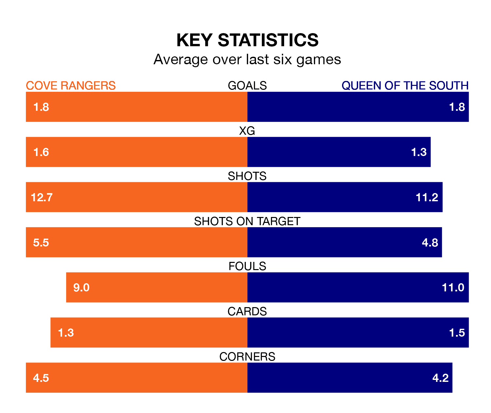

Cove Rangers host Queen of the South in Saturday's match at the Balmoral Stadium looking to bounce back from defeat last time out in League One.
The Wee Rangers, who sit third in the league after 21 games, fell to a 2-0 away defeat to Hamilton Academical on January 13.
They face a Queen of the South side who secured a draw in their last match, a 1-1 tie with Alloa Athletic, and who sit seventh in the table.
In Rumarn Burrell, Cove have the league's most on-form striker so far this season. He has notched 17 goals in 21 appearances.
His goal rate of one every 106 minutes is quicker than that of Gavin Reilly, Queen of the South's top scorer with a goal every 194 minutes, and a total of seven goals in 16 games.
With 28 goals in 21 games so far this season, the Doonhamers are scoring at below the league average rate with 1.3 goals per game. And they are conceding more than average, letting in 34 goals at a rate of 1.6 per game.
Rangers, meanwhile, are above average scorers, with 1.7 goals per game, compared to a league average of 1.5. They have conceded 1.4 goals per game.
The Wee Rangers are in disappointing form in League One, with one win and two draws from their last six games.
With three wins and two draws over that period, the visitors' form is much better – they have taken 11 points from 18, compared to the home side's five.
In the last five years, Cove and Queen of the South have played each other on five occasions. They won two each, and they drew once.
On average, the Wee Rangers scored 1.4 goals and the Doonhamers 1.0 in those matches.
Their last meeting was on October 28, when Cove won 1-0 away.
Updated: 09:07 (UTC), 24/01/24